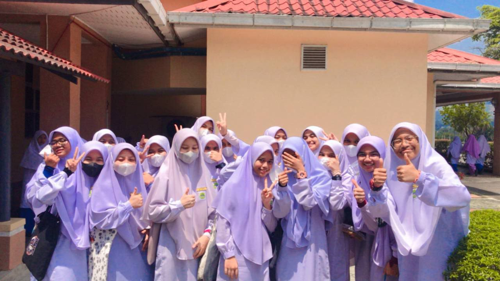
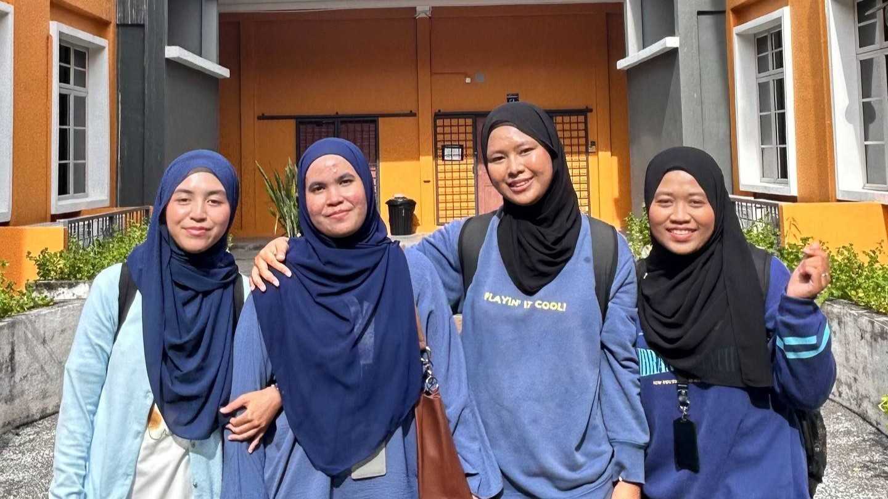

*ੈ✩‧₊˚ The Foundation (Secondary School) ˚₊· ➳❥
The first chapter of this visual story takes me back to my secondary school days.
These were the years where it all began where dreams were small, and the bonds of friendship
were formed in the hallways and classrooms.
These photos serve as a gentle reminder of my younger self, a time filled with
innocence and the foundational lessons that taught me the value of connection and resilience.

*ੈ✩‧₊˚ The Growth (University Life) ˚₊· ➳❥
As the story moves forward, the second chapter reflects my current life as a university student.
Stepping into the world of Higher Education, especially in the field of Information Technology,
has been a transformative experience. These images capture the essence of my journey at university
the late night study sessions, the joy of achieving milestones, and the wonderful friends who have become my second family.